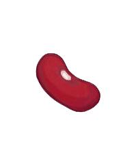
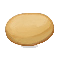

KENYAN
What makes food
"Kenyan?"

BEANS

POTATOES
Sustenance is prioritized over flavors.
Kenyan cooking utilizes starch, beans, grains, and vegetbales daily.
Cooking with a few ingredients is what Kenyan cooking is all about.
Learn more about which ingredients are used daily by kenyans!
STAPLE KENYAN INGREDIENTS